当我踏上这片土地，就知道来对了地方。从蜀中到巴南，我走过了一个世界。 ——HML
这次巴蜀之旅谈不上是一次说走就走的旅行，但也算是率性而为了，从决定出发到预定机票酒店也就是以分钟来计。真正踏上旅程是在一周后，正值清明。
其实我本身不太能也不是很爱吃辣，无奈家中有一只爱吃辣的笨笨，也慢慢习惯了吃辣，当然了，成都重庆正是辣味王国，所以我们来啦——巴蜀天府！
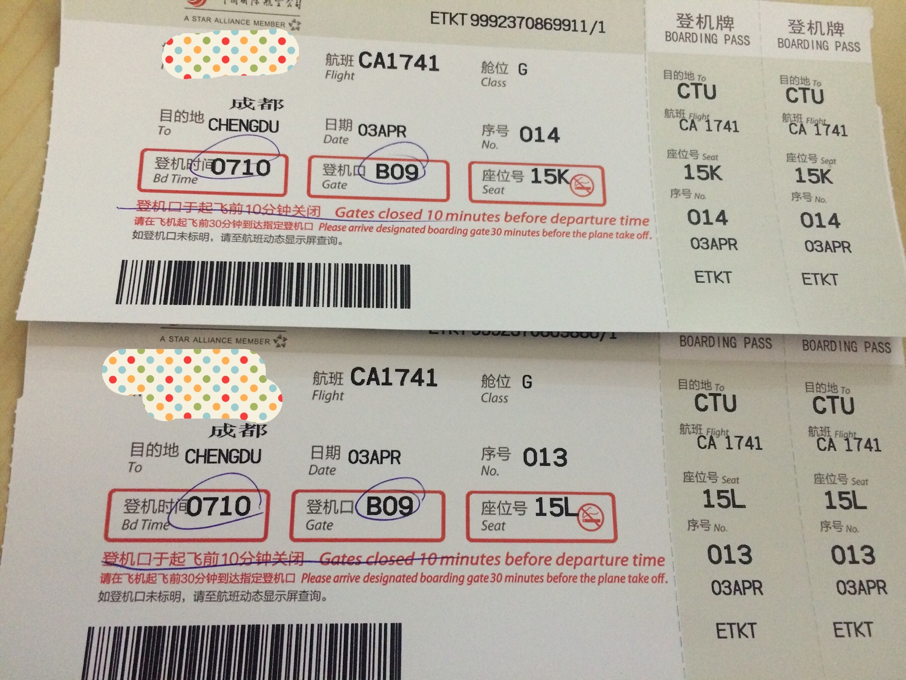
4.3一大早4:30起来，怕打不到车提前约了uber司机，5:30就顺利坐上了车前往萧山机场。6点多久顺利抵达机场，一分钱没花，Uber棒棒哒，忍不住要为它打下广告！7:40的航班一切都在计划中！
飞机准点起飞准点降落，一转眼就从细雨绵绵的杭州到了阳光灿烂的成都。从双流机场出来后直奔快铁（机场交通很便利，有地铁、大巴，也有火车），被告知要去春熙路还需要转车挺麻烦，最后还是选择了机场大巴，往天府广场春熙路一带要坐2号线。
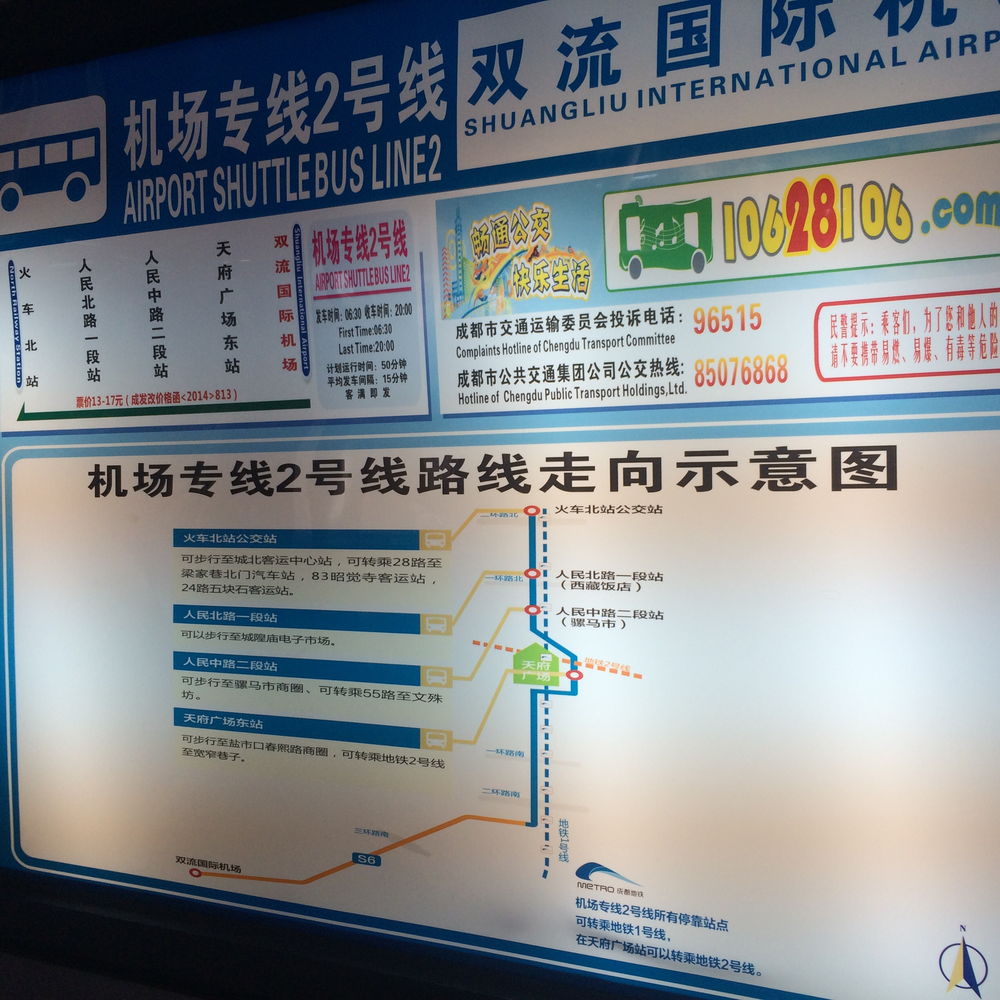
我们选择了宜必思酒店，离地铁近，相对来说环境也不错。
放下行李就直奔吃的而去，已经快2点了也是时候填肚子了。酒店楼下就有一家婆婆串串，看上去比较本土，无奈笨笨倾心于另一家看上去更热闹更好吃的。两个人到店做下，老板就上了锅底和菜单，点的是鸳鸯，噼里啪啦点完菜，菜上来发现怎么没有串串，一问才知道串串是要自助拿的，我们吃的算是火锅了，悲剧！上菜的美女说点菜是不能退的，那就只能先吃着了（话说成都的姑娘真的是挺水灵的，脸不胖但是有肉，皮肤也很有水分的样子）。上了慕名已久的冰粉，刚好赶上老板娘自家吃饭，蹭了他们一碗粉丝——辣但好吃——应该是正宗的川味儿！
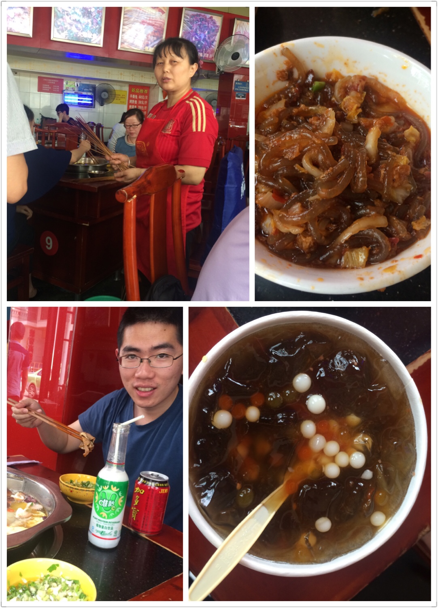
吃完午饭，附近就是春熙路开始逛街，因为是工作日所以人不是很多。和众多的商业街一样，春熙路也是大大小小的商户，可能范围更大一点，从小商品市场级别的到国际大牌LV都有，但没什么意思，大概逛了下就结束了。不过，成都的熊猫元素还真是丰富，随处可见，包括这只IFS上的大熊猫。
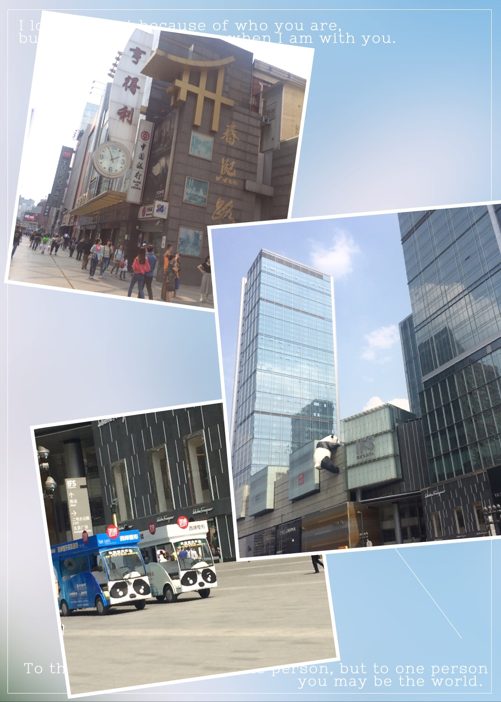
从春熙路坐地铁很快就到了武侯祠，旁边是锦里。貌似这算是成都的“景点套餐”，被三国文化浸染的蜀地自然是少不了诸葛亮的历史记忆。如果你了解三国，听闻过诸葛亮亦或者只是知道出师表，武侯祠都是你尽情追忆历史的好地方。建议还是租用一个导游仪，至少可以带走一段历史。
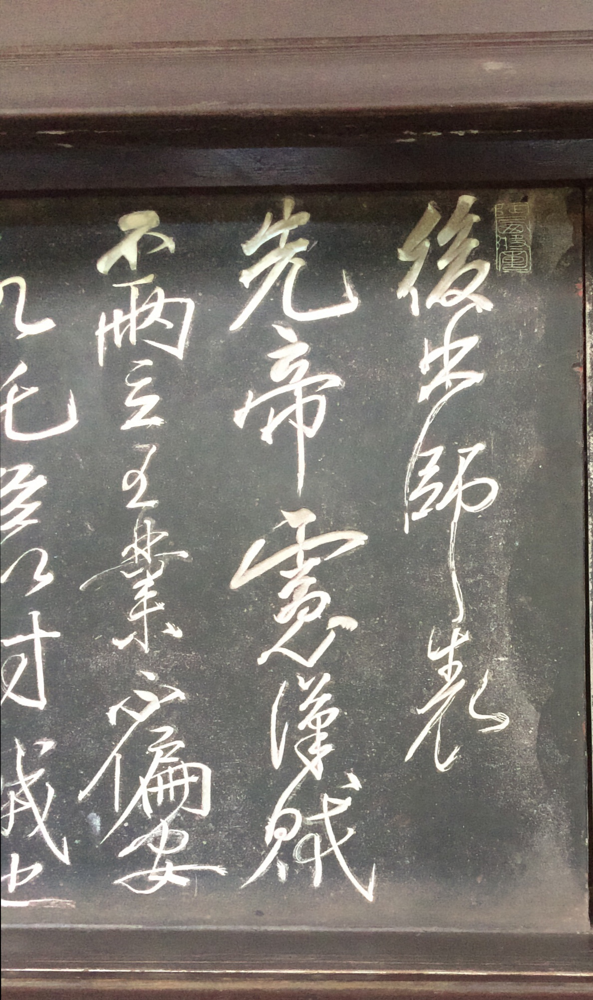
锦里就在旁边，是一条商业风格的窄巷子，成都的景点有一点好：就是绿树茵茵。在春天来真的是没错的。前半段是一些小玩意儿纪念品，也没什么特别的，后半段据说更多的是小吃，人比较多也就没去挤了。
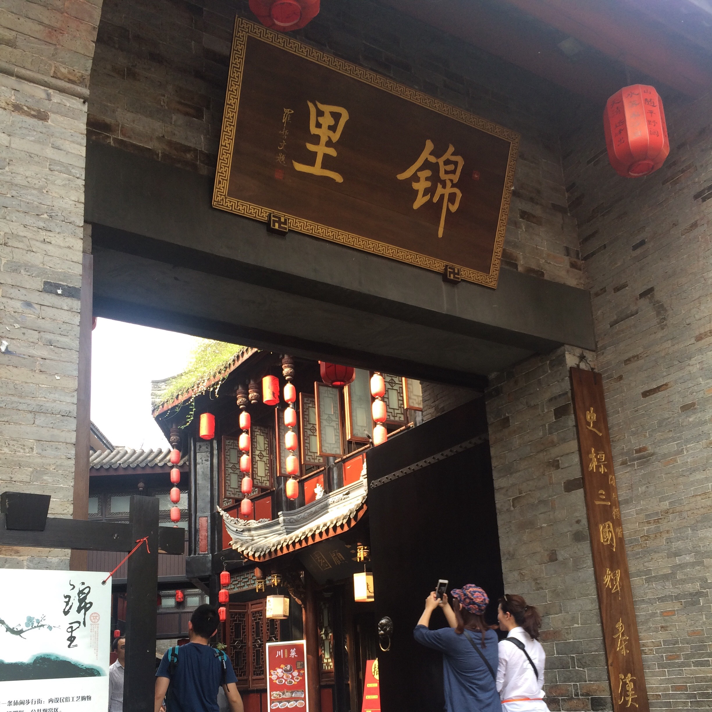
接着我们前往宽窄巷子，这一天算是赶场子了。进巷子前路过肥肠粉经不住诱惑的笨笨要了一碗红油肥肠，我要了一碗豆花，虽说是景区味道倒也不错，不知道是因为饿了还是因为确实好吃。走进巷子，可以发现无论是锦里还是宽窄巷子人都远远多于武侯祠，可见现代游客对历史的热情已经远输于对商业的认可了。勉强找了几个人少的角度。
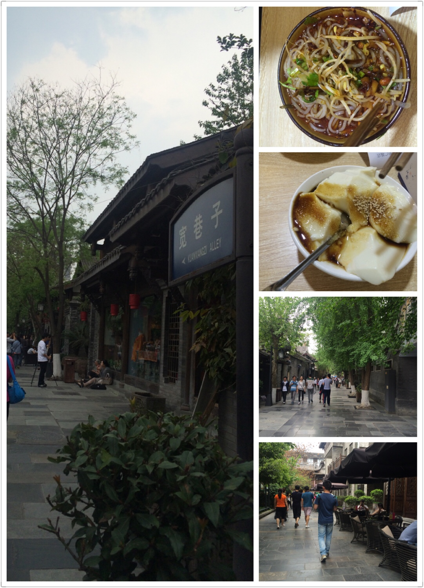
白天走得比较累，夜生活就打算在附近找找吃的了。惊喜的发现酒店附近就有小吃城，来几张重口味的，据说这都是为勇士准备的，瞧这小样应该知道味道怎样了。可惜的是慕名而去的小谭豆花早早关门了，就是这么任性！不过成都的食物真心便宜，一大碗冒菜的价格也就是十几块钱，还是荤素搭配的，至于那副脑–子，就当给笨笨吃啥补啥了。
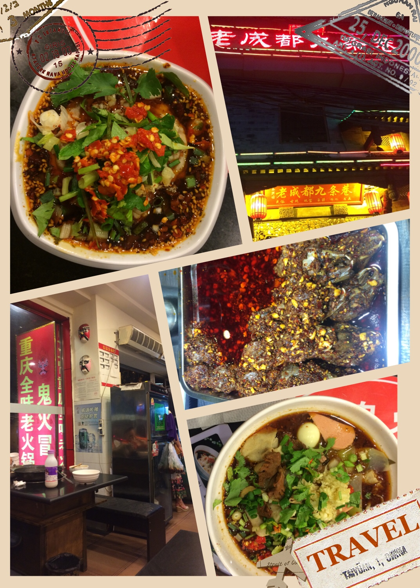
第二天一早要赶往都江堰。有必要晒晒有名的宜宾燃面，点的是重庆小面和酸菜粉丝，味道很不错，精神抖擞！
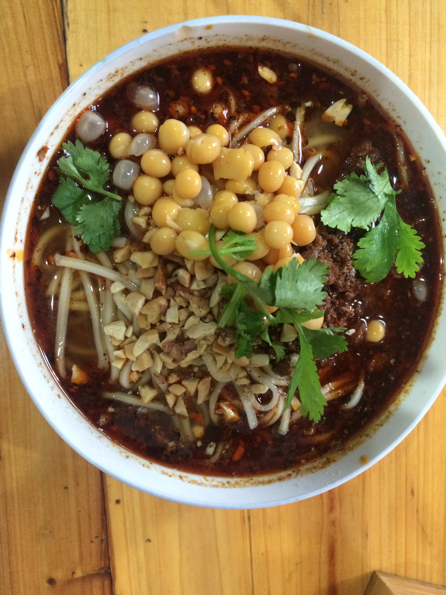
都江堰由鱼嘴、飞沙堰和宝瓶口三部分组成，这里面是古人治水的宝贵财富暂且不说，单单是整个水利工程的原理了解下来就是叹为观止了。这是我比较推荐的一个景点。要记得让导游或者讲解仪带你走入那个文化的世界，否则你会错过很多东西。景区的右侧是南桥，算是宝瓶口的下游，岷江的水就是从这里远远流去，风景独好。还有值得一提的是那座安澜索桥，又名夫妻桥，是清代何先德夫妇建造，也是寓意着情人夫妻间的誓死情谊。走的时候还是很忐忑的，估计没有心情你侬我侬。
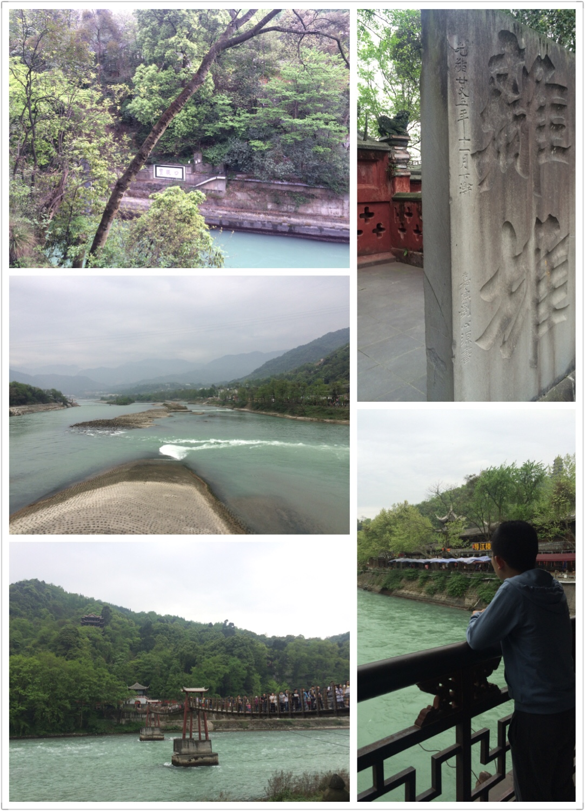
拜水都江堰，问道青城山。都江堰给我的印象不错，接下来是前往道家青城。无奈在都江堰待的比较久，下午2点才抵达青城山。主峰老霄顶海拔1260米，青城山的前山是景区，有上清宫和老君阁，都是道家的代表建筑，我们前往前山。从景点到入口还有很长一段距离，可以坐观光车也可以走路。我们尝试着走路，没有让我们失望的是这一路的青翠，空气很清新，也很明朗，这种感觉没有办法用相机记录。开始上山，时间比较晚了，爬上去是不可能了，加之第一天走的有点久，只能索道上山。青城索道不是从山脚下开始的，而是需要爬上去一点，绕过月城湖。可惜的是，旱水期月城湖已经消殆了往日的清丽，并不可人。索道上山，停下来的时候还没有登顶，不知为什么一样的累，爬到上清宫已是完全不行了，可惜了无缘老君阁。下山依然是索道，下山的路总是比上山容易，顺利赶上了回成都的车。这一天下来整个人都软了，但也是累并快乐着。不知道为什么，我总感觉上青山的某个角度和孙悟空拜道的去景点很相似。
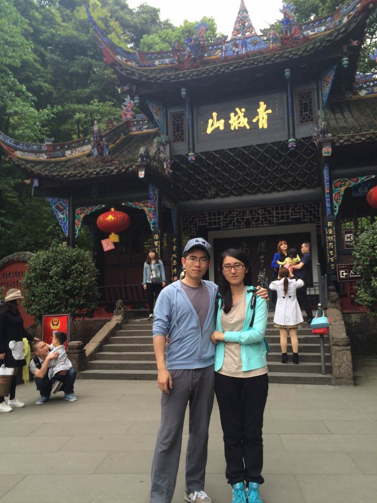
从青城山回到了成都的老车站——成都北站。北站在2环的位置，离我们住的地方比较远。查了一下，发现乘坐鼎鼎大名的154公交车顺路能回酒店。关键不在于顺不顺路，在于这是一趟特别的公车——沿路是各种吃吃吃！另外，不得不说这真是一辆人性的公车，长着老爷车的皮囊，内部还是很美丽大方舒适的嘛！冲着明婷饭店（苍蝇馆子）去的，结果一路都是好吃的，好几次想下车奔其他的美食而去，还好坚持住了。到曹家巷站下车，就被路边的王记特色锅盔吸引了，正在犹豫要不要吃，怕一会吃不动，老板吆喝着：最后一个，牛肉的，要打烊了！身后另外两个妹子逼近，果断拿下了，他们只有干瞪眼的份了——哈哈，咬一口！
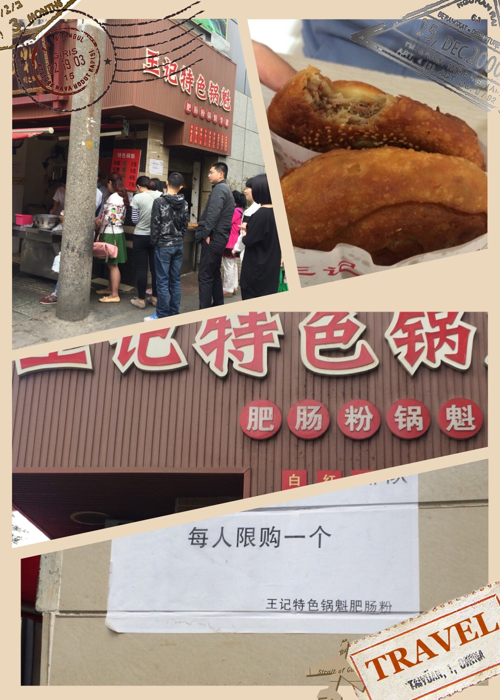
还去了久仰大名的明婷饭店，菜品和菜量都是良心啊，两人要是点五个菜包你吃不完，葱油腰花和酸梅汁不错。
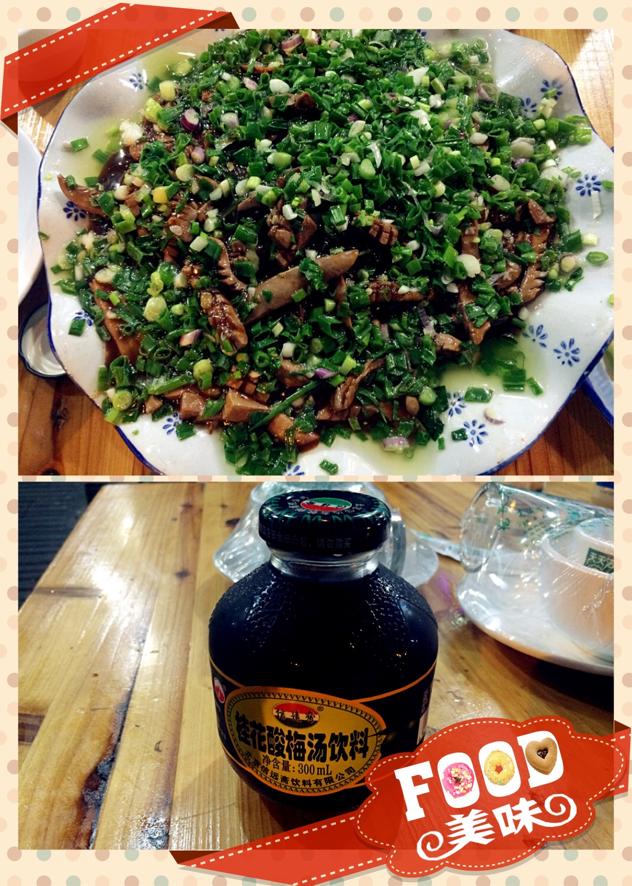
清明节，也是在成都的最后一天。安排了去熊猫基地。一大早又去吃了宜宾泡面和肥肠粉，味道棒棒嗒。基地有点远，需要倒车，坐着公交10点就到了，人很多。大熊猫真是蠢萌蠢萌的，好懒，连吃竹子都是躺着吃，吃完一根马上接着下一根，据说他们一天能吃掉40公斤竹子，真是大胃王，这吃法基地的自产竹子根本不够吃，需要去别处买。另外，基地育有各个年龄周期的大熊猫，还有小熊猫和孔雀，遗憾的是没看到熊猫产房。
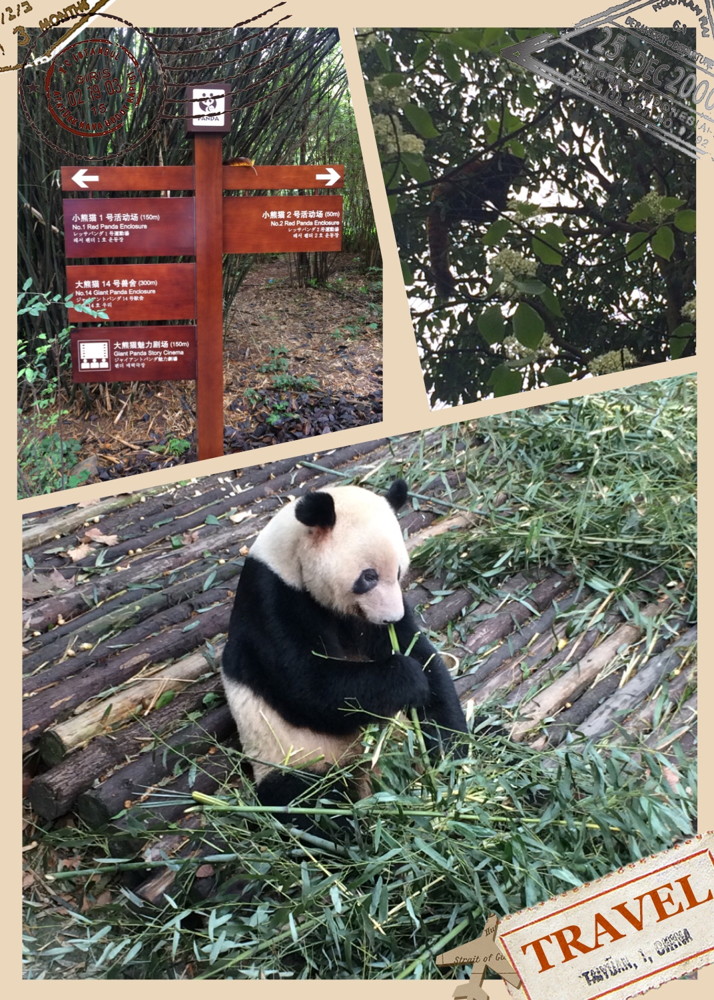
看完熊猫坐车返回，又路过王记锅盔，忍不住又下来买了，吃完走路回酒店。回到酒店简直累趴了，在成都的几天步行太多，老腰快不行了😁。
下午约了王维去电子科大参观。不得不说这真是个气派的土豪学校，小维同学带我们吃了学校的小吃，又吃了地道的成都火锅，辣得很嗨。
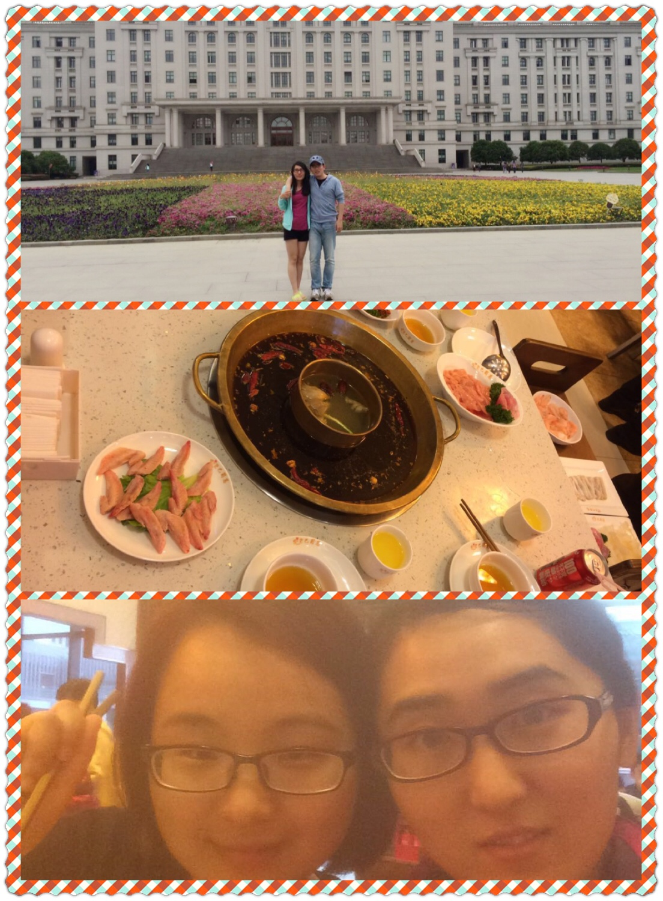
成都篇之后马上赶往重庆。重庆之旅是2天。现在想来对重庆的印象比对成都要深刻。可能是由于重庆高低错落的山城印象太鲜明，地铁也都演变成了轻轨。也可能是美食太多，让人流连。
我们住在全季酒店，设施很不错，价格也不贵，真是难得。
首先吃到的是鼎鼎大名的酸辣粉，无论是用料还是酸辣都是毫不手软，货真价实，笨笨超级喜欢吃，我有点扛不住。
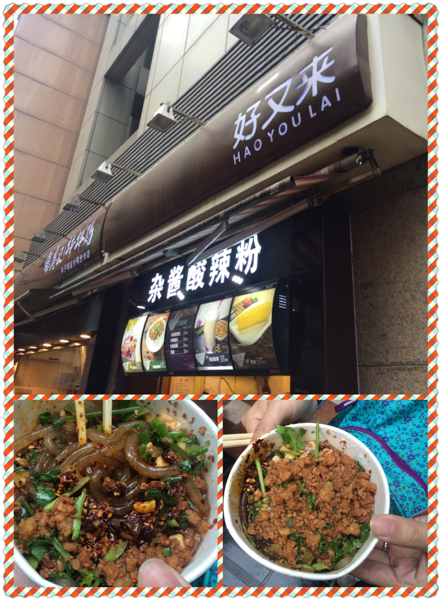
接下来是时候好好看看山城重庆了。我们原则了坐地铁去坐过江索道。重庆整个雾蒙蒙的，似乎停下来坐着看看风景就好了，很宁静。过江之后是重庆的老城区，本想好好走一走，无奈重庆的地形也是醉了，眼看着目的地在头顶上却上不去，硬是要迂回很远才可以。
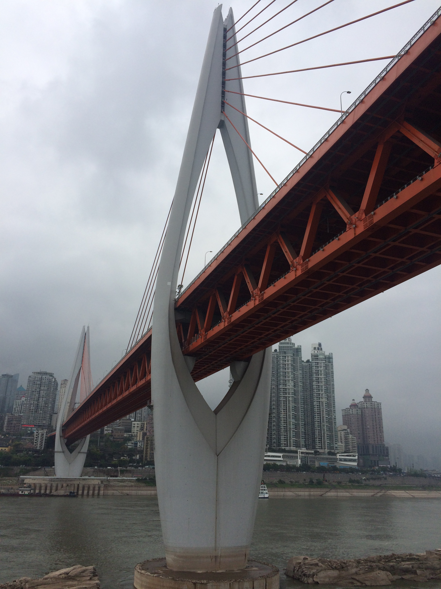
绕道从桥上走回对岸，不过江滨这条南滨路还真的和南山路有几分相似。景区都有神似之处。走了好多路，冲着朝天门去了！天空下着蒙蒙雨，沿路随处可见老百姓随地支起架子，铺张硬纸板打牌，可怜重庆人爱玩。
豁出去半条命到了朝天门居然遇到施工被拦起来了。可惜了了。只能坐着公交继续往前。
空气很凉爽，我们到了洪崖洞，走得好累，坐下来喝杯茶，坐了好久，夜景很美，只是吹得有点冷😂。
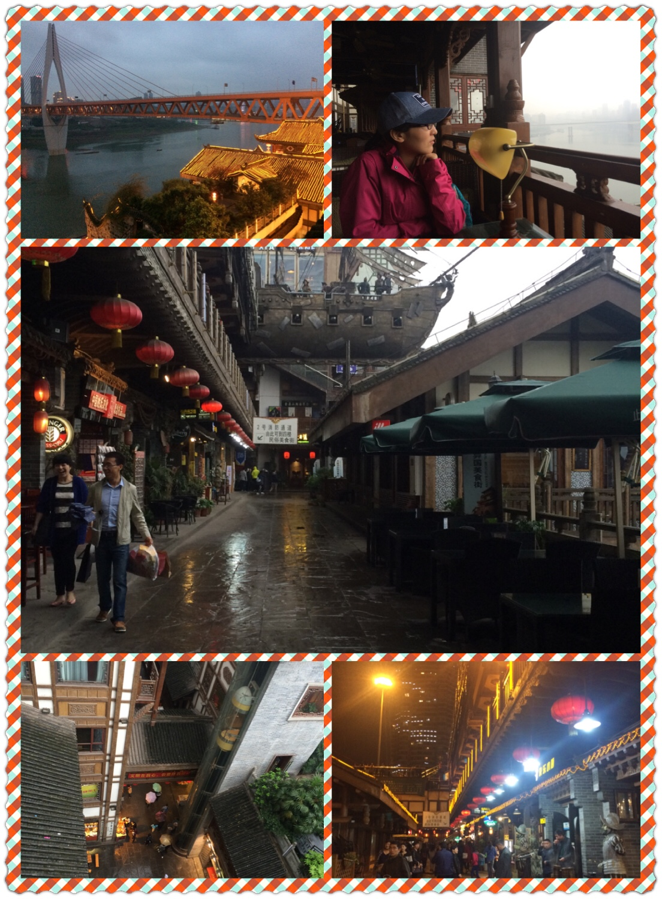
到重庆的两天很凉爽，空气里水汽很足，心情很好，仿佛时间过的很快。玩了四天了，最后一天打算悠哉一点不赶路了。
第二天睡到很晚起来，远的景点来不及了，由于我们俩都很喜欢重庆的轻轨，觉得重庆是一个很神奇的城市，所以打算坐着轻轨好好看看这个城市。我们一路倒了几条地铁线，从巴中到巴南，领略了山城浩荡风华。
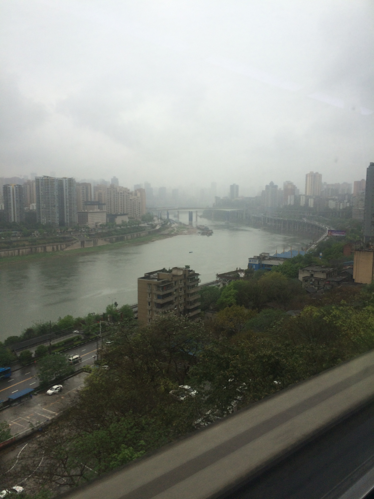
临近中午觉得应该去吃一次地道的火锅，找到一家胖子烂火锅，地道的重庆火锅啊，现在想起来也是口水直流。怪事前没做好功课，点的菜还不够到位，吃法也搞错了。鸭肠煮老了，酥肉没有煮着吃。好在土豆和西红柿还是绝美。好像当地人都吃油碟，和我们家里吃的很不一样，那个油碟我吃不下去呀！
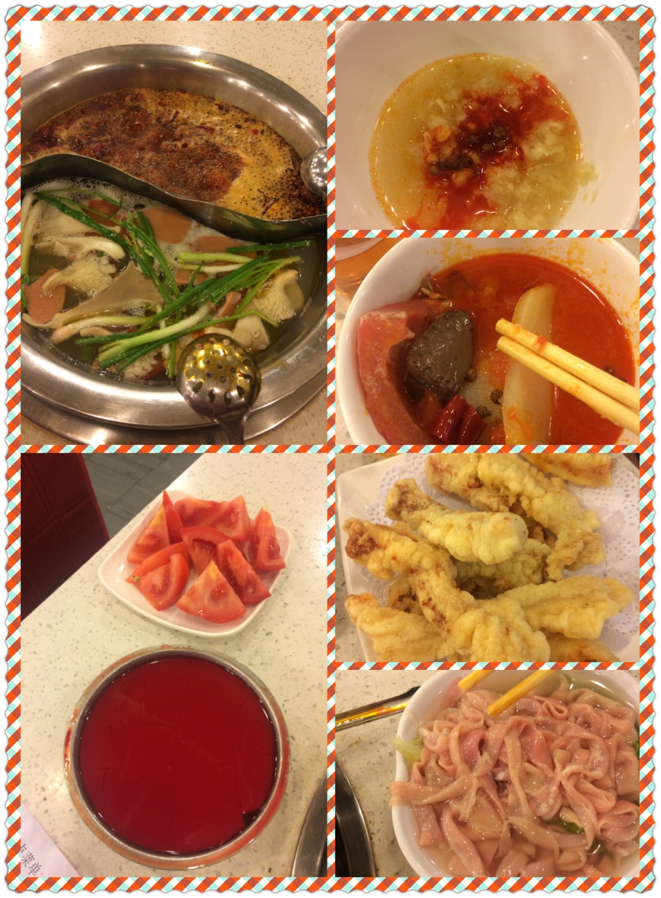
晚上的飞机很快就到杭州了，这一路留下的不仅仅是回忆。
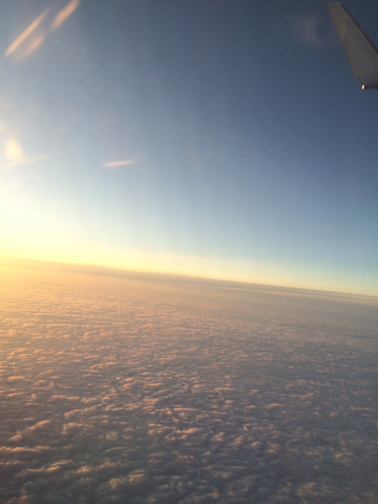